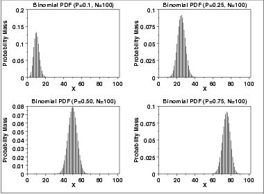
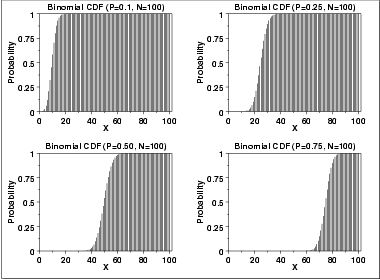
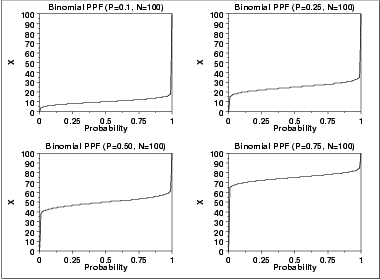

|
1.
Exploratory Data Analysis
1.3. EDA Techniques 1.3.6. Probability Distributions 1.3.6.6. Gallery of Distributions
|
|||||||||||||||
| Probability Mass Function |
The binomial distribution is used when there are exactly two mutually
exclusive outcomes of a trial. These outcomes are appropriately
labeled "success" and "failure". The binomial distribution is used to
obtain the probability of observing x successes in N
trials, with the probability of success on a single trial denoted by
p. The binomial distribution assumes that p is fixed
for all trials.
The formula for the binomial probability mass function is \( P(x;p,n) = \left( \begin{array}{c} n \\ x \end{array} \right) (p)^{x}(1 - p)^{(n-x)} \;\;\;\;\;\; \mbox{for $x = 0, 1, 2, \cdots , n$} \) where \( \left( \begin{array}{c} n \\ x \end{array} \right) = \frac{n!} {x!(n-x)! } \) The following is the plot of the binomial probability density function for four values of p and n = 100.  |
||||||||||||||
| Cumulative Distribution Function |
The formula for the binomial cumulative probability function is
\( F(x;p,n) = \sum_{i=0}^{x}{\left( \begin{array}{c} n \\ i \end{array} \right) (p)^{i}(1 - p)^{(n-i)}} \) The following is the plot of the binomial cumulative distribution function with the same values of p as the pdf plots above.  |
||||||||||||||
| Percent Point Function |
The binomial percent point function does not exist in simple
closed form. It is computed numerically. Note that because
this is a discrete distribution that is only defined for integer
values of x, the percent point function is not smooth in the
way the percent point function typically is for a continuous
distribution.
The following is the plot of the binomial percent point function with the same values of p as the pdf plots above.  |
||||||||||||||
| Common Statistics |
|
||||||||||||||
| Comments | The binomial distribution is probably the most commonly used discrete distribution. | ||||||||||||||
| Parameter Estimation |
The maximum likelihood estimator of p (for fixed n) is
\( \tilde{p} = \frac{x} {n} \) |
||||||||||||||
| Software | Most general purpose statistical software programs support at least some of the probability functions for the binomial distribution. | ||||||||||||||